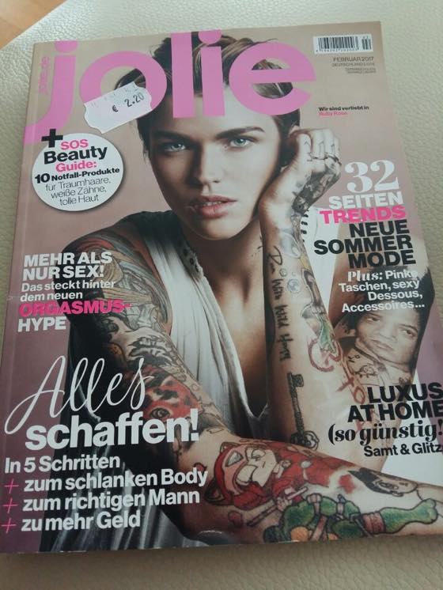
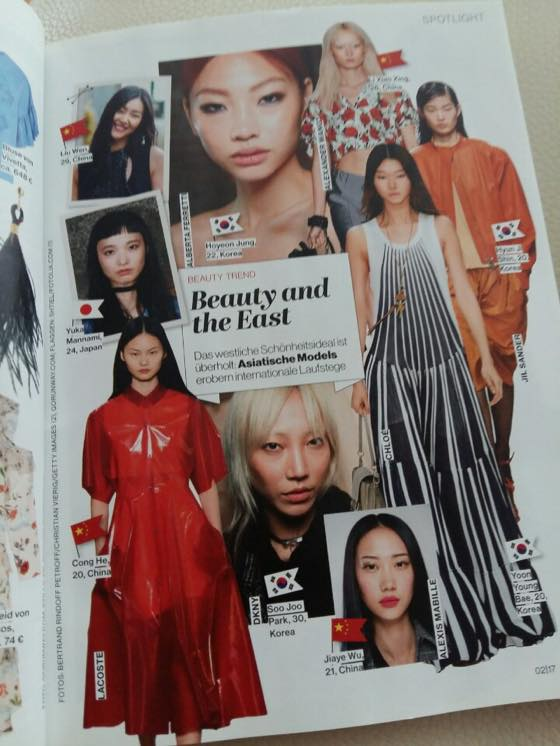
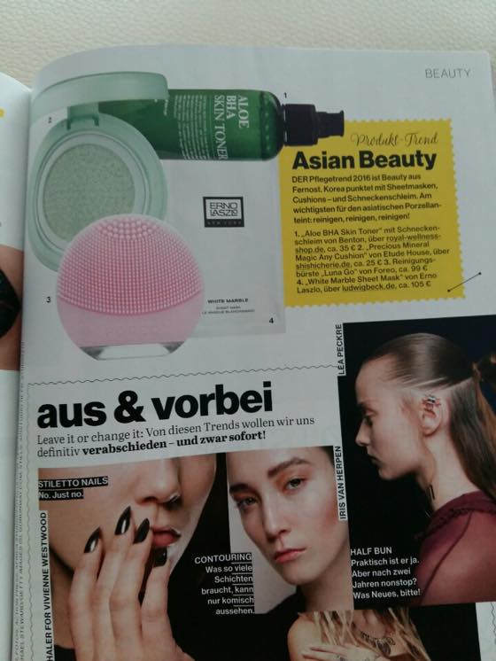
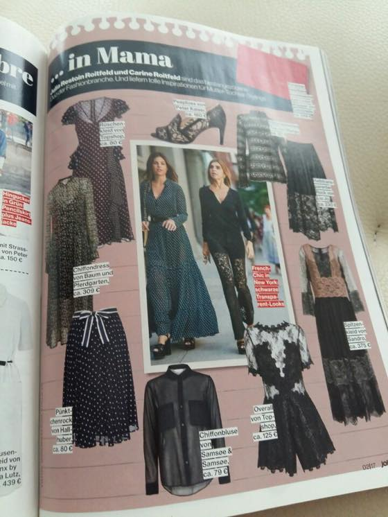
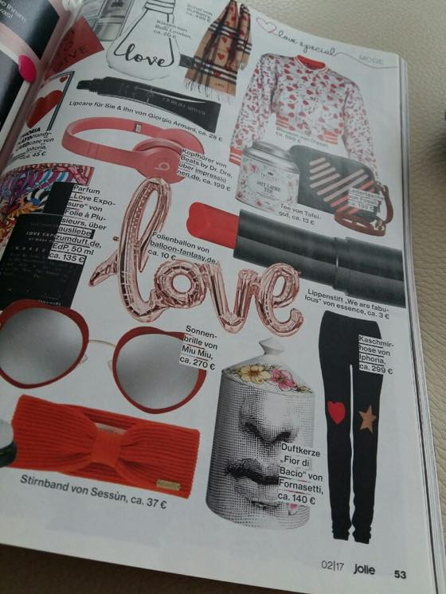
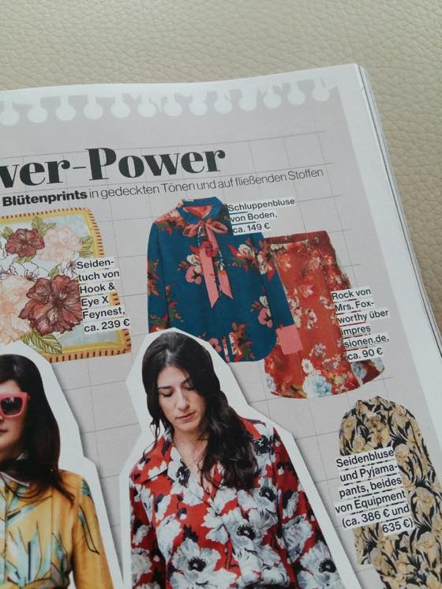

엄마님과 1월1일부터 함께한 6박8일의 동유럽 패키지 여행
패키지 유럽 여행이라는게
새벽같이 기상 -> 3시간이동 -> 2시간-3시간 관광 -> 3시간 이동 -> 3-4시간 관광 -> 취침 뭐 이런 패턴이라 ㅋㅋㅋㅋㅋ 버스는 정말 원없이 탔습니다. ㅋㅋㅋㅋㅋ 자유시간이 적다는게 불만이지만 제때 밥주고 관광지 스팟 내려다 주고 자잘한 짐들은 전부 버스에 두고 다닐수 있다는 점이 좋네요 ^^**
엄마님 말로는 서유럽 패키지는 이것보다 더 빡세다고 ㅋㅋㅋㅋㅋㅋㅋ
덕분에 이동중 휴게소도 꼬박꼬박 들렸습니다. 과자나 커피를 구입해서 5개국 과자수집 여행을 하는 기분도 들었는데
그중 루비로즈가 표지인 패션잡지가 보여서 구입해보았습니다. 가격은 2.20유로
오스트리아였는지 어디서 구매했는지 심지어 구매장소도 가물가물 ^^;;;
(*즈히집 김여사는 하루에 세번씩 "야 지금 우리가 어느나라에 있는거냐? 여기가 어디야? - 라고 저에게 물어봤습니다 하루에 한번씩 도시와 나라가 바뀌니ㅋㅋㅋㅋㅋㅋ )
*인터넷 찾아보니 독일 매거진 이네요 ^^**

Beauty and the East
한국 모델들이 나온 페이지가 있어서 한장
요즘 유럽에서 k-뷰티 가 심심치 않게 보입니다.
잡지에서도 소개되고 뷰티 온라인 쇼핑몰에서도 아예 k-뷰티 섹션이 따로 생겨날 정도. 신기해욤 :3

Asia Beauty 코너엔 에뛰드 하우스 제품이 ㅋㅋㅋ

요래 깜장깜장한 패숑 좋아합니다//

핑크색 닥터드레와 레깅스가 맘에드네용

셔츠 & 블라우스 류에 관심이 전혀 없었는데 최근 다시 이것저것 구경하고 있습니다.
파란색 블라우스 이쁘당/////